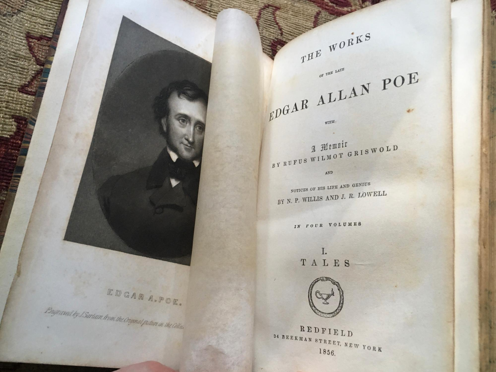
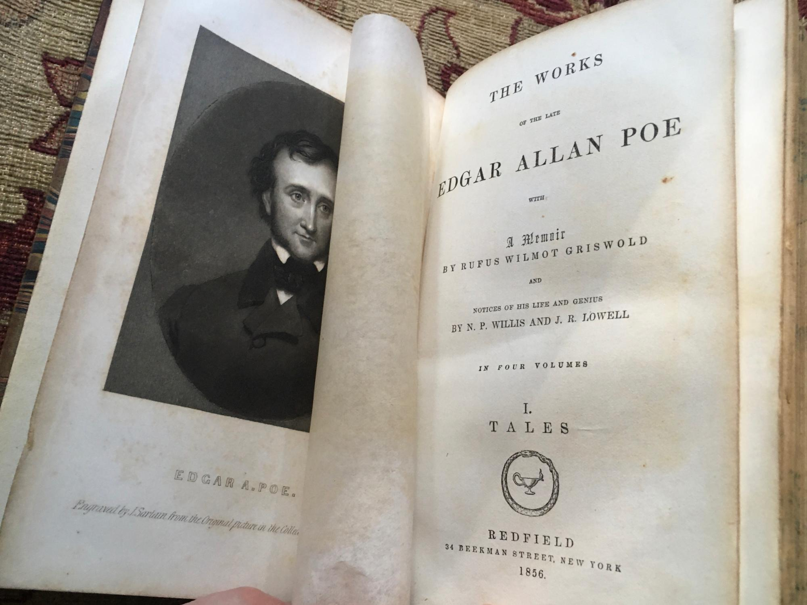

Poe's writing reflects his literary theories, which he presented in his criticism and also in essays such as "The Poetic Principle".[105] He disliked didacticism[106] and allegory,[107] though he believed that meaning in literature should be an undercurrent just beneath the surface. Works with obvious meanings, he wrote, cease to be art.[108] He believed that work of quality should be brief and focus on a specific single effect.[105] To that end, he believed that the writer should carefully calculate every sentiment and idea.[109] Poe describes his method in writing "The Raven" in the essay "The Philosophy of Composition", and he claims to have strictly followed this method. It has been questioned whether he really followed this system, however. T. S. Eliot said: "It is difficult for us to read that essay without reflecting that if Poe plotted out his poem with such calculation, he might have taken a little more pains over it: the result hardly does credit to the method."[110] Biographer Joseph Wood Krutch described the essay as "a rather highly ingenious exercise in the art of rationalization".